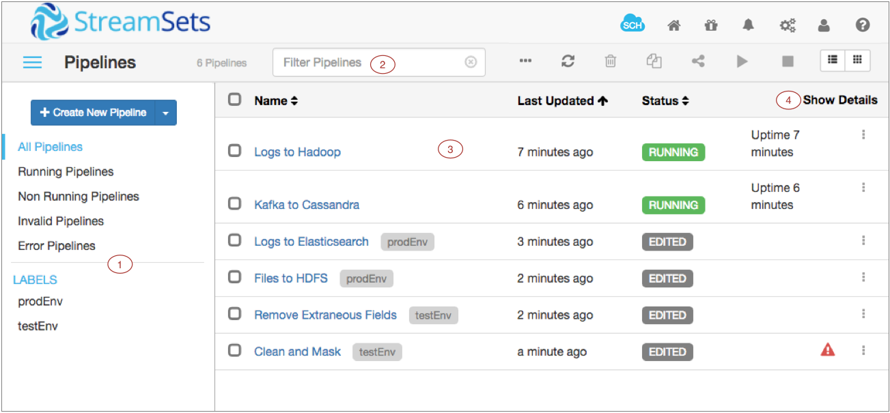

Getting Started
What is StreamSets Data Collector?
StreamSets Data CollectorTM is a lightweight, powerful design and execution engine that streams data in real time. Use Data Collector to route and process data in your data streams.
To define the flow of data, you design a pipeline in Data Collector. A pipeline consists of stages that represent the origin and destination of the pipeline, and any additional processing that you want to perform. After you design the pipeline, you click Start and Data Collector goes to work.
Data Collector processes data when it arrives at the origin and waits quietly when not needed. You can view real-time statistics about your data, inspect data as it passes through the pipeline, or take a close look at a snapshot of data.
How should I use Data Collector?
Use StreamSets Data Collector like a pipe for a data stream. Throughout your enterprise data topology, you have streams of data that you need to move, collect, and process on the way to their destinations. Data Collector provides the crucial connection between hops in the stream.
To solve your ingest needs, you can use a single Data Collector to run one or more pipelines. Or you might install a series of Data Collectors to stream data across your enterprise data topology.
How does this really work?
Let's walk through it...
After you install and launch Data Collector, you use the Data Collector UI to log in and create your first pipeline.
What do you want it to do? Let's say you want to read XML files from a directory and remove the newline characters before moving it into HDFS. To do this, you start with a Directory origin stage and configure it to point to the source file directory. (You can also have the stage archive processed files and write files that were not fully processed to a separate directory for review.)
To remove the newline characters, connect Directory to an Expression Evaluator processor and configure it to remove the newline character from the last field in the record.
To make the data available to HDFS, you connect the Expression Evaluator to a Hadoop FS destination stage. You configure the stage to write the data as a JSON object (though you can use other data formats as well).
You preview data to see how source data moves through the pipeline and notice that some fields have missing data. So you add a Field Replacer to replace null values in those fields.
Now that the data flow is done, you configure the pipeline error record handling to write error records to a file, you create a data drift alert to let you know when field names change, and you configure an email alert to let you know when the pipeline generates more than 100 error records. Then, you start the pipeline and Data Collector goes to work.
The Data Collector goes into Monitor mode and displays summary and error statistics immediately. To get a closer look at the activity, you take a snapshot of the pipeline so you can examine how a set of data passed through the pipeline. You see some unexpected data in the pipeline, so you create a data rule for a link between two stages to gather information about similar data and set an alert to notify you when the numbers get too high.
And what about those error records being written to file? They're saved with error details, so you can create an error pipeline to reprocess that data. Et voila!
StreamSets Data Collector is a powerful tool, but we're making it as simple as possible to use. So give it a try, click the Help icon for information, and contact StreamSets if you need a hand.
What is StreamSets Data Collector Edge?
StreamSets Data Collector EdgeTM (SDC Edge) is a lightweight execution agent without a UI that runs pipelines on edge devices. Use SDC Edge to read data from an edge device or to receive data from another pipeline and then act on that data to control an edge device.
You design edge pipelines in Data Collector. An edge pipeline is a pipeline that runs in edge execution mode on SDC Edge.
SDC Edge is installed separately from Data Collector. You must install SDC Edge on each edge device where you want to run edge pipelines.
For more information about using SDC Edge, see Meet StreamSets Data Collector Edge.
What is StreamSets Control Hub?
StreamSets Control HubTM is a central point of control for all of your dataflow pipelines. Use Control Hub to allow your teams to build and execute large numbers of complex dataflows at scale.
Teams of data engineers use the shared repository provided with Control Hub to collaboratively build pipelines. Control Hub provides full lifecycle management of the pipelines, allowing you to track the version history and giving you full control of the evolving development process.
Control Hub lets you deploy and execute dataflows at scale on manually administered or automatically provisioned Data Collectors or on edge devices using Data Collector Edge.
You can map multiple dataflows in a single visual topology and can view real-time statistics to measure dataflow performance across each topology, from end-to-end or point-to-point. You can also monitor alerts to ensure that incoming data meets business requirements for availability and accuracy.
To use Control Hub, you need a user account within an organization. If you already have an organization defined for your enterprise, ask the organization administrator for a user account. If you don’t have access to an organization, contact StreamSets with a request for a new organization.
For more information about using Control Hub, see Meet StreamSets Control Hub.
Logging In and Creating a Pipeline in Data Collector
After you start Data Collector, you can log in to Data Collector and create your first pipeline.
You can customize the address and login that you use to access Data Collector. This procedure uses the default settings.
Data Collector User Interface
Data Collector provides a web-based user interface (UI) to configure pipelines, preview data, monitor pipelines, and review snapshots of data.
The Data Collector UI includes the following general areas and icons:

| Area/Icon | Name | Description |
|---|---|---|
| 1 | Pipeline canvas | Canvas for configuring, previewing, or monitoring a pipeline. |
| 2 | Properties panel / Preview panel / Monitor panel | When you configure a pipeline, the Properties panel displays the properties of the
pipeline or selected stage. You can resize, minimize and maximize the panel. When you preview data, the Preview panel displays the data that enters and exits the selected stage or group of stages. It can also display stage properties and preview configuration. When you monitor a running pipeline, the Monitor panel displays real-time metrics and statistics. Note: Some icons and options might not display. The items
that display are based on the task that you are performing and roles
assigned to your user account.
|
| StreamSets Control Hub icon | Provides information about StreamSets Control Hub and lets you register this Data Collector with Control Hub. | |
| Home icon | Displays a home page with a list of pipelines and their statuses, allowing you to perform pipeline maintenance and navigate to individual pipelines. | |
| Package Manager icon | Displays the Package Manager which allows you to install additional stage libraries for a core Data Collector installation. | |
| Notifications icon | Displays notifications. | |
| Administration icon | Provides access to Data Collector configuration properties, directories, and log. Also allows you to shut down Data Collector. | |
| User icon | Displays the active user and the roles assigned to the user. Also allows you to log out of Data Collector. | |
| Help icon | Provides context-sensitive help based on the information in the panel. Allows you
to configure display settings and to specify whether to use a local or hosted version of
the help. Provides access to the REST API and the Data Collector version. |
|
| Link to a pipeline list | Link to a pipeline list on the Home page. Use to view a list of available pipelines, perform pipeline maintenance like starting or sharing a pipeline, and navigate to individual pipelines. | |
| More icon |
Provides additional actions for the pipeline. |
For information about configuring pipelines, see Data Collector UI - Edit Mode.
For information about data preview options, see Data Collector UI - Preview Mode.
For information about pipeline monitoring options, see Data Collector UI - Monitor Mode.
Configuring the Display
You can configure how information in the Data Collector UI displays, such as the online help version, information density in the panel, and the pipeline creation help bar.
Data Collector UI - Pipelines on the Home Page
Data Collector displays a list of all available pipelines and related information on the Home page. You can select a category of pipelines, such as Running Pipelines, to view a subset of all available pipelines.
Pipelines display on the Home page when you or your user group has read permission on the pipeline or when you created the pipeline.
View pipelines on the Home page to perform pipeline maintenance, such as copying or sharing a pipeline. You can access
the Home page when you click the Home icon ( ) in the
top-level set of icons on the page. You can also access the Home page by clicking the
Pipelines link in the pipeline path when you are configuring or monitoring a pipeline.
) in the
top-level set of icons on the page. You can also access the Home page by clicking the
Pipelines link in the pipeline path when you are configuring or monitoring a pipeline.
The following image shows the Data Collector Home page:
| Area/Icon | Name | Description |
|---|---|---|
| 1 | Pipeline library | Library of pipelines associated with this Data Collector. The library lists:
|
| 2 | Pipeline list | Allows you to select one or more pipelines and then perform an action on the pipelines, such as starting, stopping, or exporting the pipelines. |
| 3 | Filter field | Allows you to filter for pipelines by name. |
| 4 | Show Details | Displays details about error messages and alert texts for each pipeline in the list. |
| StreamSets Control Hub icon | Provides information about StreamSets Control Hub and lets you register this Data Collector with Control Hub. | |
| Home icon | Displays a home page with a list of pipelines and their statuses, allowing you to perform pipeline maintenance and navigate to individual pipelines. | |
| Package Manager icon | Displays the Package Manager which allows you to install additional stage libraries for a core Data Collector installation. | |
| Notifications icon | Displays notifications. | |
| Administration icon | Provides access to Data Collector configuration properties, directories, and log. Also allows you to shut down Data Collector. | |
| User icon | Displays the active user and the roles assigned to the user. Also allows you to log out of Data Collector. | |
| Help icon | Provides context-sensitive help based on the information in the panel. Allows you
to configure display settings and to specify whether to use a local or hosted version of
the help. Provides access to the REST API and the Data Collector version. |
|
| Toggle Library Pane icon | Icon to show or hide the pipeline library. | |
| More icon |
Provides additional actions for pipelines. Use to reset origins for pipelines, add labels to pipelines, export pipelines, and display pipeline IDs. |
|
| Refresh icon | Refreshes the pipeline list. | |
| Delete icon | Deletes the selected pipelines. | |
| Duplicate icon | Duplicates the selected pipelines. | |
| Share icon | Shares the pipeline with users and groups. Use to configure pipeline permissions. | |
| Start icon | Starts the selected pipelines. | |
| Stop icon | Stops the selected pipelines. | |
| List View icon | Displays the pipelines in a list. | |
| Grid View icon | Displays the pipelines in a grid. | |
| Error icon | Indicates that the pipeline has errors. | |
| Actions icon | Allows you to import, export, duplicate, or delete a single pipeline. |
For information about configuring pipelines, see Data Collector UI - Edit Mode.
For information about data preview options, see Data Collector UI - Preview Mode.
For information about pipeline monitoring options, see Data Collector UI - Monitor Mode.